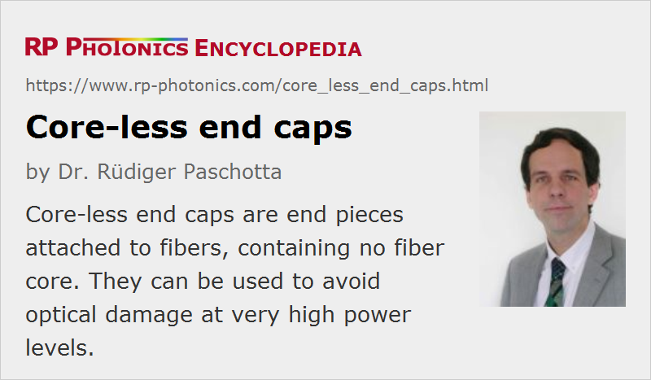

Core-less End Caps
Definition: end pieces attached to optical fibers, containing no fiber core
Categories: fiber optics and waveguides, lasers
How to cite the article; suggest additional literature
Author: Dr. Rüdiger Paschotta
For some fiber optics applications, particularly in the area of fiber amplifiers and lasers, it can be helpful to use optical fibers with core-less end caps. These end caps are essentially homogeneous transparent pieces with a length of a few millimeters, for example. As the end caps contain no waveguide (fiber core), light propagates in these regions as beams which expand toward the ends.
Such end caps can be made by attaching (e.g. fusion splicing) small pieces of homogeneous glass to the fiber ends. In case of photonic crystal fibers, it can be sufficient to heat the fiber end e.g. with a fusion splicer, so that the microscopic holes collapse.
The possible advantages of core-less end caps are:
- For a given optical power, the optical intensities at the glass–air interface are reduced. In this way, optical damage of fiber end faces, e.g. in Q-switched fiber lasers or in pulsed fiber amplifiers, can be avoided.
- Any Fresnel reflections at the glass–air interface cannot efficiently couple back into the fiber core, since the reflected beam diverges further on the way back to the core. This effect, possibly combined with an angled end face, can help e.g. to suppress parasitic lasing in high-gain fiber amplifiers. On the other hand, it is then not possible to use the Fresnel reflection for the output coupler of a fiber laser.
- For photonic crystal fibers, an end cap (hermetically sealed end facet) can prevent fluids (e.g. water) from getting into the air holes, from which they could hardly be removed due to strong capillary forces.
Questions and Comments from Users
Here you can submit questions and comments. As far as they get accepted by the author, they will appear above this paragraph together with the author’s answer. The author will decide on acceptance based on certain criteria. Essentially, the issue must be of sufficiently broad interest.
Please do not enter personal data here; we would otherwise delete it soon. (See also our privacy declaration.) If you wish to receive personal feedback or consultancy from the author, please contact him e.g. via e-mail.
By submitting the information, you give your consent to the potential publication of your inputs on our website according to our rules. (If you later retract your consent, we will delete those inputs.) As your inputs are first reviewed by the author, they may be published with some delay.
Bibliography
| [1] | Y. O Aydin et al., “Endcapping of high-power 3 μm fiber lasers”, Opt. Express 27 (15), 20659 (2019), doi:10.1364/OE.27.020659 |
See also: fibers, fiber lasers, fiber amplifiers, photonic crystal fibers, fiber optics
and other articles in the categories fiber optics and waveguides, lasers
|  |
If you like this page, please share the link with your friends and colleagues, e.g. via social media:
These sharing buttons are implemented in a privacy-friendly way!